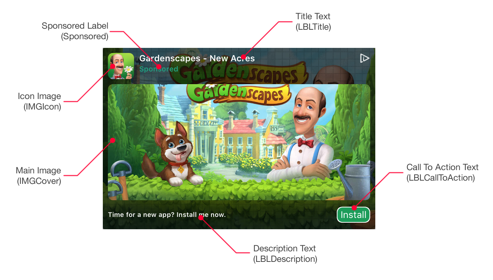
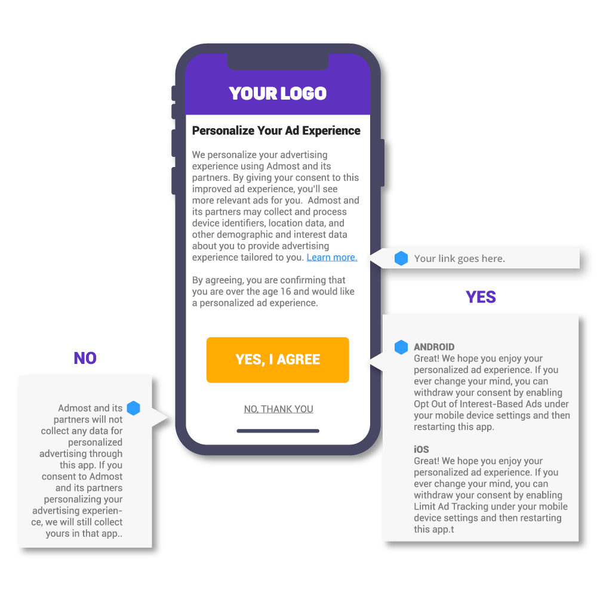

Prerequisites
- iOS 8 or later.
- Xcode 9.0 or later.
- Application Id provided in Admost Mediation Dashboard.
- Zone Id(s) provided in Admost Mediation Dashboard.
For testing you can use following Ids;
Application Id: @"15066ddc-9c18-492c-8185-bea7e4c7f88c"
Banner Zone Id: @"b4009772-de04-42c4-bbaa-c18da9e4a1ab"
Interstitial Zone Id: @"39f74377-5682-436a-9338-9d1c4df410bd"
RewardedVideo Zone Id: @"2bdefd44-5269-4cbc-b93a-373b74a2f067"
Setup
You can install AMR SDK and mediation adapters using CocoaPods (recommended) or add AMR SDK framework files and mediation adapters files manually to your project.
Installation With CocoaPods
CocoaPods is a dependency manager for Swift and Objective-C Cocoa projects which automates and simplifies the process of using 3rd-party libraries like AMR in your projects. See getting started guide for more information on installing cocoapods.
Create your podfile and install
At least one mediation adapter is required for AMRSDK to show banners. You can add all adapters (recommended for maximized revenue) or start with a subset of adapters. Consult your AMR agent for further details.
Please click + icon to add to list and - to remove from list.
Podfile will be updated while you are choosing networks.
To integrate AMR SDK and mediation adapters into your Xcode project using CocoaPods, specify it in
your Podfile:
Then, run the following command:
$ pod installAfter you complete pod installation you can skip to Xcode Setup step.
Manual Installation
AMR Framework Files
Drag and drop following files in AMRDemo/AMRSDK folder to your project.
Other Frameworks and Libraries
Add following frameworks and libraries to your project.
- AddressBook.framework
- AdSupport.framework
- AudioToolbox.framework
- AVFoundation.framework
- AVKit.framework
- CFNetwork.framework
- CoreGraphics.framework
- CoreLocation.framework
- CoreMedia.framework
- CoreMotion.framework
- CoreTelephony.framework
- EventKit.framework
- EventKitUI.framework
- ImageIO.framework
- Foundation.framework
- JavaScriptCore.framework
- libsqlite3.tbd
- libxml2.tbd
- libz.tbd
- MediaPlayer.framework
- MessageUI.framework
- MobileCoreServices.framework
- QuartzCore.framework
- SafariServices.framework
- Social.framework
- StoreKit.framework
- SystemConfiguration.framework
- UIKit.framework
- WatchConnectivity.framework
- WebKit.framework
Mediation Adapters
At least one mediation adapter is required for AMRSDK to show banners. You can add all adapters (recommended for maximized revenue) or start with a subset of adapters. Consult your AMR agent for further details.
Create a folder called Mediation Adapters (name is optonal) and add adapters in AMRDemo/MediationAdapters folder.
-
AMRDemo/MediationAdapters
- AMRAdapterAdcolony
- AMRAdapterAdmob
- AMRAdapterAdmost
- AMRAdapterAmazon
- AMRAdapterApplovin
- AMRAdapterAppnext
- AMRAdapterAvocarrot
- AMRAdapterChartboost
- AMRAdapterFacebook
- AMRAdapterFlurry
- AMRAdapterFyber
- AMRAdapterInmobi
- AMRAdapterIronsource
- AMRAdapterLoopme ~ iOS9+
- AMRAdapterMobfox ~ iOS9+
- AMRAdapterMopub
- AMRAdapterNexage
- AMRAdapterSmaato
- AMRAdapterStartapp
- AMRAdapterTapjoy
- AMRAdapterUnity
- AMRAdapterVungle
Xcode Setup
Make sure $(PROJECT_DIR) recursive is set in your target's Framework Search
Paths in Build Settings.
Add -ObjC and -lc++ flags in your target's Other Linker Flags
in Build Settings.
Add following lines to your plist file.
<key>NSAppTransportSecurity</key>
<dict>
<key>NSAllowsArbitraryLoads</key>
<true/>
</dict><key>NSCalendarsUsageDescription</key>
<string>Some ad content may access calendar</string>If you are using Applovin add the following lines to your plist file.
<key>AppLovinSdkKey</key>
<string>YOUR_KEY</string>Usage
Initialization
To initialize Admost Mediation SDK, import AMRSDK.h to your AppDelegate
file;
#import <AMRSDK/AMRSDK.h>and initialize AMRSDK with your Application Id in didFinishLaunchingWithOptions
callback;
- (BOOL)application:(UIApplication *)application
didFinishLaunchingWithOptions:(NSDictionary *)launchOptions {
//GDPR COMPLIANCE
[AMRSDK setUserConsent:YES];
[AMRSDK subjectToGDPR:YES];
[AMRSDK startWithAppId:@"<appId>"];
return YES;
}
For testing you can use following Application Id;
Application Id: @"15066ddc-9c18-492c-8185-bea7e4c7f88c"
GDPR
Once you have collected the user’s consent, you can pass it onto the SDK using the init configuration parameters shown above.
setUserConsent has a boolean parameter. If you have the user’s consent, set it YES. If you do not have the user's consent, set it NO.
subjectToGDPR has a boolean parameter. If you know the user is subject to GDPR, set it YES. If you know the user is not subject to GDPR, set it NO.
If you don’t pass the user’s consent or subjectToGDPR to the SDK, the rules described in GDPR have been applied.
Banner Ads
To create and show a banner ad first import AMRSDK.h to your
UIViewController file and declare an AMRBanner *mpuBanner property;
// ViewController.h
#import <AMRSDK/AMRSDK.h>
@interface ViewController : UIViewController <AMRBannerDelegate>
@property(nonatomic, strong) AMRBanner *mpuBanner;
@end
Initialize it with your Banner Zone Id and set it's
delegate to an object (generally your viewController) which conforms to <AMRBannerDelegate>
protocol.
// ViewController.m
mpuBanner = [AMRBanner bannerForZoneId:@"<zoneId>"];
mpuBanner.delegate = self;
For testing you can use following Banner Zone Id;
Banner Zone Id: @"b4009772-de04-42c4-bbaa-c18da9e4a1ab"
Optionally you can set the width of the banner, default value is screen width.
mpuBanner.bannerWidth = 300;Start loading banner with loadBanner method and wait for the
<AMRBannerDelegate> protocol callbacks.
[mpuBanner loadBanner];There are 2 callback methods in <AMRBannerDelegate> protocol.
When didReceiveBanner callback method is called just add banner's
bannerView as a subview on your viewcontroller to show banner.
- (void)didReceiveBanner:(AMRBanner *)banner {
[self.view addSubview:banner.bannerView];
}If didFailToReceiveBanner callback method is called investigate error to adress the
problem.
- (void)didFailToReceiveBanner:(AMRBanner *)banner error:(AMRError *)error {
NSLog(error.errorDescription);
}Customize Native Ad Appearance (Optional)
You can change the appearance of native ads to suit your application's design. If you are integration AMR with Cocoapods extract CustomXibs.zip in AMRSDK pod to your project. If you are manually integrating AMR add AMRDemo/Assets/Natives/ folder to your project.
You can change the layout and design of following assets;
If you want to use your own layouts you can create a copy and modify one of the custom sized samples (CustomNative150x250.xib, CustomNative200x200.xib or CustomNative300x120.xib) and change their frame to fit your design.

To use your own custom native xibs you have set the name and size of the custom xib explicitly as follows;
_bannerCustom200x200 = [AMRBanner bannerForZoneId:@"c72a4a52-23c5-4c34-9eb1-7bbc4c08c7e4"];
_bannerCustom200x200.delegate = self;
_bannerCustom200x200.customNativeSize = CGSizeMake(200, 200);
_bannerCustom200x200.customeNativeXibName = @"CustomNative200x200";
[_bannerCustom200x200 loadBanner];
Interstitial Ads
To create and show an interstitial ad first import AMRSDK.h to your UIViewController
file and declare an AMRInterstitial *fullScreen property;
// ViewController.h
#import <AMRSDK/AMRSDK.h>
@interface ViewController : UIViewController <AMRInterstitialDelegate>
@property(nonatomic, strong) AMRInterstitial *fullScreen;
@end
Initialize it with your Interstitial Zone Id and
set it's
delegate to an object (generally your viewController) which conforms to
<AMRInterstitialDelegate> protocol.
// ViewController.m
fullScreen = [AMRInterstitial interstitialForZoneId:@"<zoneId>"];
fullScreen.delegate = self;
[fullScreen loadInterstitial];
For testing you can use following Interstitial Zone Id;
Interstitial Zone Id: @"39f74377-5682-436a-9338-9d1c4df410bd"
There are 3 callback methods in <AMRInterstitialDelegate> protocol.
When didReceiveInterstitial callback method is called just call the showFromViewController
method to present interstitial from a viewController.
- (void)didReceiveInterstitial:(AMRInterstitial *)interstitial {
[interstitial showFromViewController:self];
}didDismissInterstitial callback method is called to inform the application that the
interstitial is no longer present. You can use this callback to resume paused tasks during
interstitial presentation.
- (void)didDismissInterstitial:(AMRInterstitial *)interstitial {
[animation resume];
}If didFailToReceiveInterstitial callback method is called investigate error
to adress the problem.
- (void)didFailToReceiveInterstitial:(AMRInterstitial *)interstitial error:(AMRError *)error {
NSLog(error.errorDescription);
}Rewarded Video Ads
Rewarded video ads' integration is pretty similar to Interstitial ads with 1 additional callback
didCompleteRewardedVideo to reward the user. To create and show a rewarded video ad
first import
AMRSDK.h to your UIViewController file and declare an AMRRewardedVideo *rewardedVideo property;
// ViewController.h
#import <AMRSDK/AMRSDK.h>
@interface ViewController : UIViewController <AMRRewardedVideoDelegate>
@property(nonatomic, strong) AMRRewardedVideo *rewardedVideo;
@end
Initialize it with your RewardedVideo Zone Id
and
set it's
delegate to an object (generally your viewController) which conforms to
<AMRRewardedVideoDelegate> protocol.
// ViewController.m
rewardedVideo = [AMRRewardedVideo rewardedVideoForZoneId:@"<zoneId>"];
rewardedVideo.delegate = self;
[rewardedVideo loadRewardedVideo];
For testing you can use following RewardedVideo Zone Id;
RewardedVideo Zone Id: @"2bdefd44-5269-4cbc-b93a-373b74a2f067"
There are 4 callback methods in <AMRRewardedVideoDelegate> protocol.
When didReceiveRewardedVideo callback method is called just call the showFromViewController
method to present rewarded from a viewController.
- (void)didReceiveRewardedVideo:(AMRRewardedVideo *)rewardedVideo {
[rewardedVideo showFromViewController:self];
}
didCompleteRewardedVideo callback method is called to inform the application that the user finished watching the video and can be rewarded. Use this callback to reward the user.
- (void)didCompleteRewardedVideo:(AMRRewardedVideo *)rewardedVideo {
[player reward];
}
didDismissRewardedVideo callback method is called to inform the application that the
rewarded video is no longer present. You can use this callback to resume paused tasks during
rewarded video presentation.
- (void)didDismissRewardedVideo:(AMRRewardedVideo *)rewardedVideo {
[animation resume];
}
If didFailToReceiveRewardedVideo callback method is called investigate
error
to adress the problem.
- (void)didFailToReceiveRewardedVideo:(AMRRewardedVideo *)rewardedVideo error:(AMRError *)error {
NSLog(error.errorDescription);
}GDPR
We specified your responsibilities for obtaining consent from end-users of your apps in our updated Privacy Policy. By updating GDPR compatible SDK you agree that you’re responsible for inform the end-users and take their consent. Please note that the consent collection applies only to users located in the European Economic Area, the United Kingdom, and Switzerland. As data controller you should take consent of end-users by preparing consent window, you can find samples below. When you take end-user consent, the response will be passed to Admost SDK. You can find the implementation here
Network GDPR Complience
| Ad Network | GDPR Compatibility |
|---|---|
| Adcolony | |
| Admob | |
| Amazon | |
| Applovin | |
| Appnext | |
| ChartBoost | |
| Flurry | |
| Fyber | |
| Glispa | |
| InMobi | |
| IronSource | |
| LoopMe | |
| Mobfox | |
| Mopub | |
| Nexage | |
| Smaato | |
| Startapp | |
| Tapjoy | |
| Unity | |
| Vungle |
GDPR Rules
Admost provides two methods for GDPR compatibility: [AMRSDK subjectToGDPR:] and [AMRSDK setUserConsent:].
Publisher have to set [AMRSDK subjectToGDPR:YES] if the user is located in European Union. Otherwise, publisher have to set [AMRSDK subjectToGDPR:NO] . If publisher does not use this method, SubjectToGDPR status remains as unknown. In this case, Admost SDK automatically determines whether the user is in EU or not which is totally under responsibility of the publisher. If user is in EU, networks are not allowed to show personalized ads. If the user is not located in EU, the ad networks are allowed to show personalized ads.
On condition that, the publisher obtains neither user's SubjectToGDPR status nor any negative legal consequences, SubjectToGDPR must set [AMRSDK subjectToGDPR:YES] for each user. In this case, Admost considers all users as subject to GDPR and if the consent is not allowed, Admost blocks ad networks to collect data from users. Which may cause a decrease on overall revenue performance apart from Admost.
If the publisher obtains user's consent and sets [AMRSDK setUserConsent:YES], personalized ads would be shown to the users. Otherwise, the publisher sets [AMRSDK setUserConsent:NO] which would block the personalized ads, unless the user is not subject to GDPR.
If the publisher does not use [AMRSDK setUserConsent:] method , userConsent status remains unknown. In this case, if the publisher provides [AMRSDK subjectToGDPR:YES], the ad networks do not have ability to serve personalized ads.If the publisher provides [AMRSDK subjectToGDPR:NO], the ad networks have ability to serve personalized ads.
If the publisher does not provide both [AMRSDK setUserConsent:] and [AMRSDK subjectToGDPR:], Admost decides whether the user is located in EU or not which is totally under responsibility of the publisher.
If the publisher wants to obtain neither the user's consent nor any negative legal consequences, the publisher must set [AMRSDK setUserConsent:NO] for every user. In this case, Admost considers the user has no consent, the ad networks are not allowed to serve personalized ads, except only the publisher does not provide [AMRSDK subjectToGDPR:NO] .
Extras
DFP/Admob Mediation Integration
The AMR DFP Adapter lets publishers integrate Admost Mediation Router ads into applications with DFP or Admob Mediation set as main ad mediation layer.
In order to show AMR ads in DFP/Admob Mediation you should first follow dedicated steps of DFP or Admob Mediation to set AMR as an ad mediation source.
After adding AMR as an ad mediation source you should define class names for banner and interstitial
ad custom events. Enter AMRDFPCustomEventBanner and
AMRDFPCustomEventInterstitial class names for
banner and interstitial class names respectively. You must pass your AMR zone Id to custom event via
Parameter field.


Include Admost DFP Adapter in your project after setup, if you are using CocoaPods add following line to ypur podfile and run the following command to install.
pod AMRAdapterDFP
$ pod install
If you are integration Admost manually add AMRAdapterDFP from AMRDemo/MediationAdapters
folder to your project.
Now you can show AMR banner and interstitial ads via DFP or Admob Mediation.
You can check DFP banner and interstitial example in demo project; DFPCustomEventsViewController.
Test Suite
You can use Test Suite to test your ad networks with your zone ids.
To use Test Suite in your application, you can use following code;
[AMRSDK startTestSuiteWithZones:@[<zoneIds>]];

In App Purchase Tracking New
The following method is used to track purchases with receipt validation:
[AMRSDK trackPurchase:<transactionId>
currencyCode:<currencyCode>
amount:<amount>];
Explanation of Parameters:
- transactionId – Transaction identifier of SKPaymentTransaction.
- currencyCode – Currency code of transaction.
- amount – Amount of transaction.
Example code for in app purchase tracking:
SKProduct *product = ...;
NSLocale *priceLocale = product.priceLocale;
NSString *currencyCode = [priceLocale objectForKey:NSLocaleCurrencyCode];
[AMRSDK trackPurchase:transaction.transactionIdentifier
currencyCode:currencyCode
amount:[product.price doubleValue]];
Preloading Banners
You can use cacheBanner method to cache your banners before showing them.
In order to cache banners use following code;
AMRBanner* banner = [AMRBanner bannerForZoneId:@"<zoneId>"];
banner.bannerWidth = 320;
[banner cacheBanner];
Setting Application User Id New
You can use the following method to set application specific user id in AMR Analytics for enhanced tracking of your users. You have to call this method after initialization.
[AMRSDK setUserId:@"<applicationUserId>"];
Release Notes
In this page, you can find a record of all the changes made to this project such as bug fixes, new features, etc.
- Version 1.3.57
- Version 1.3.56
- Version 1.3.55
- Version 1.3.43
- Version 1.3.38
- Version 1.3.35
- Version 1.3.33
- Version 1.3.30
- Version 1.3.29
- Version 1.3.28
- Version 1.3.27
- Version 1.3.26
- Version 1.3.21
- Version 1.3.19
- Version 1.3.18
- Version 1.3.14
- Version 1.3.12
- Version 1.3.11
- Version 1.3.10
- Version 1.3.9
- Version 1.3.8
- Version 1.3.6
- Version 1.3.5
- Version 1.3.4
- Version 1.3.2
- Version 1.3.1
- Version 1.3.0
Version 1.3.57 June 6, 2018
- AMRSDK 1.3.57
- Ironsource 6.7.9.2
Version 1.3.55 May 25, 2018
- AMRSDK 1.3.55 ~ GDPR compatibility
- Adcolony 3.3.4.0
- Admob 7.31.0.0
- Applovin 5.0.1.0
- Charboost 7.2.0.0
- Facebook 4.28.1.0
- Flurry 8.6.1.0
- Fyber 8.21.0.0
- Inmobi 7.1.1.0
- Ironsource 6.7.9.0
- Loopme 6.4.5.3
- Mobfox 3.5.0.0
- Mopub 5.0.0.0
- Nexage 6.8.0.0
- Smaato 9.0.0.0
- Startapp 3.7.1.0
- Tapjoy 11.12.2.0
- UnityAds 2.2.1.1
- Vungle 6.2.0.0
Version 1.3.43 April 27, 2018
- AMRSDK 1.3.43
Version 1.3.38 April 19, 2018
- AMRSDK 1.3.38
- Adcolony 3.3.0.1
- Tapjoy 11.11.1.4
Version 1.3.35 April 3, 2018
- AMRSDK 1.3.35
Version 1.3.33 March 26, 2018
- Swift Demo Application
- AMRSDK 1.3.33
- Adcolony 3.3.0.0
- Admob 7.29.0.0
- Amazon 2.2.17.9
- Applovin 4.8.3.0
- Appnext 1.8.3.1
- Avocarrot 4.9.0.0
- Charboost 7.1.2.0
- Facebook 4.27.2.1
- Flurry 8.4.0.0
- Fyber 8.20.2.0
- Inmobi 7.0.4.1
- Ironsource 6.7.7.0
- Loopme 6.4.5.1
- Mopub 4.20.1.1
- Mobfox 3.4.1.0
- Nexage 6.7.0.1
- Smaato 8.2.3.1
- Startapp 3.6.0.1
- Tapjoy 11.11.1.3
- UnityAds 2.2.0.0
- Vungle 5.4.0.0
- Inloco
- Leadbolt
- Mobusi
- NativeX
- Pubnative
- Revmob
- Smartadserver
- Tappx
Version 1.3.30 February 27, 2018
- AMRSDK 1.3.30
- Admost 1.1.0.0
- Smartadserver 6.7.2.0
Version 1.3.29 February 22, 2018
- AMRSDK 1.3.29
- Tapjoy 11.11.1.2
- UnityAds 2.1.2.1
- Vungle 5.3.2.1
Version 1.3.28 February 20, 2018
- AMRSDK 1.3.28
Version 1.3.27 February 16, 2018
- Application user id feature added.
- AMRSDK 1.3.27
- Tapjoy 11.11.1.1
Version 1.3.26 January 16, 2018
- Preloading Banner feature added.
- AMRSDK 1.3.26
- Admob 7.27.0.0
- Applovin 4.7.0.0
- DFP Adapter 7.27.0.0
- Facebook 4.27.2.0
- Fyber 8.19.0.0
- Leadbolt 8.2.0.0 ~ iOS9+
- Loopme 6.4.5.0 ~ iOS9+
- Mobfox 3.3.0.0 ~ iOS9+
- Tappx 3.0.2.5
- Vungle 5.3.2.0
Version 1.3.21 December 28, 2017
- AMRSDK 1.3.21
- Mopub 4.19.0.0
Version 1.3.19 December 14, 2017
- AMRSDK 1.3.19
Version 1.3.18 December 12, 2017
- AMRSDK 1.3.18 ~ Minimum iOS version updated to iOS8.
- Admost 1.0.56.1
- Admob 7.26.0.0
- Amazon 2.2.17.8
- Applovin 4.6.0.0
- Avocarrot 4.7.3.0
- Charboost 7.0.4
- DFP Adapter 7.26.0.0
- Facebook 4.26.1.0
- Flurry 8.3.4.0
- Fyber 8.18.0.0
- Inmobi 7.0.4.0
- Ironsource 6.7.3.1
- Mopub 4.18.0.0
- Nexage 6.6.0.0
- Revmob 10.0.0.0
- Tapjoy 11.11.1.0
- Tappx 3.0.2.4
- UnityAds 2.1.2.0
- Vungle 5.3.0.0
Version 1.3.14 October 31, 2017
- AMRSDK 1.3.14 ~ Fully customizable native ads.
- Demo application updated.
Version 1.3.12 October 19, 2017
- AMRSDK 1.3.12
- Flurry 8.3.0.0 ~ iOS7 support is over.
- Facebook 4.26.0.0
- Vungle 5.1.0.2 ~ iOS7 support is over.
Version 1.3.11 October 16, 2017
- AMRSDK 1.3.11 ~ In App Purchase tracking updated.
Version 1.3.10 October 12, 2017
- AMRSDK 1.3.10
- Admob 7.24.1.0
Version 1.3.9 October 10, 2017
- AMRSDK 1.3.9 ~ In App Purchase tracking added.
- Flurry 8.1.0.2
- Charboost 6.6.3.5
Version 1.3.8 October 5, 2017
- AMRSDK 1.3.8
- Adcolony 3.2.1.1
- Applovin 4.3.1.1
- Appnext 1.8.2.2
- Charboost 6.6.3.4
- Fyber 8.15.1.2
- Ironsource 6.6.8.1
- NativeX 5.5.9.3
- UnityAds 2.1.1.1
Version 1.3.6 September 18, 2017
- AMRSDK 1.3.6
Version 1.3.5 September 07, 2017
- AMRSDK 1.3.5
Version 1.3.4 August 25, 2017
- AMRSDK 1.3.4
- DFP Adapter 7.22.0.0
- Admob 7.22.0.0
- Inmobi 6.2.1.0
Version 1.3.2 August 18, 2017
- AMRSDK 1.3.2 ~ Test Suite added for testing ad networks.
Version 1.3.1 August 14, 2017
- AMRSDK 1.3.1
- Applovin 4.2.1.1
- Charboost 6.6.3.2
Version 1.3.0 August 1, 2017
- AMRSDK 1.3.0
- Applovin 4.2.1.0
- Appnext 1.8.2.0
- Avocarrot 4.5.0.0
- Facebook 4.25.0.1
- Flurry 8.1.0.0
- Fyber 8.15.1.0
- Tappx 3.0.2.0
- Vungle 5.1.0.1 ~ From Admost dashboard you should enter
zone_idfrom network settings to Vungle.